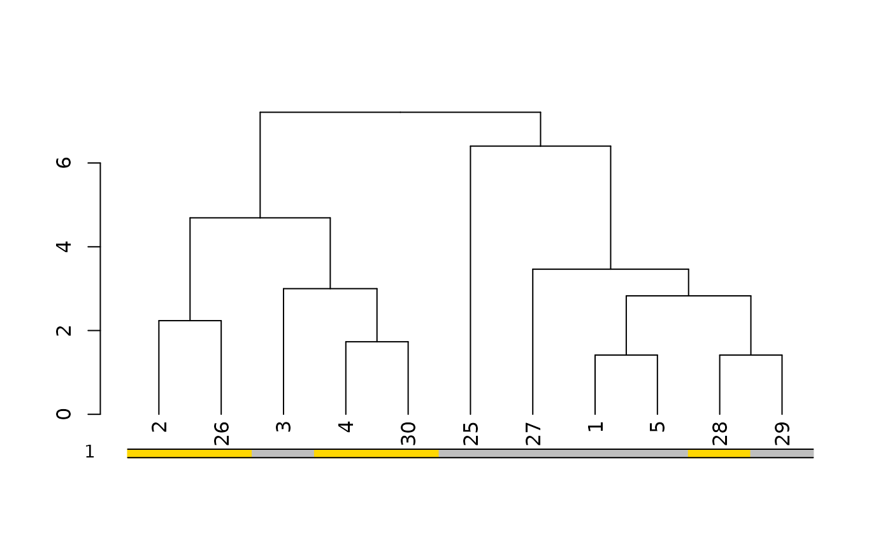
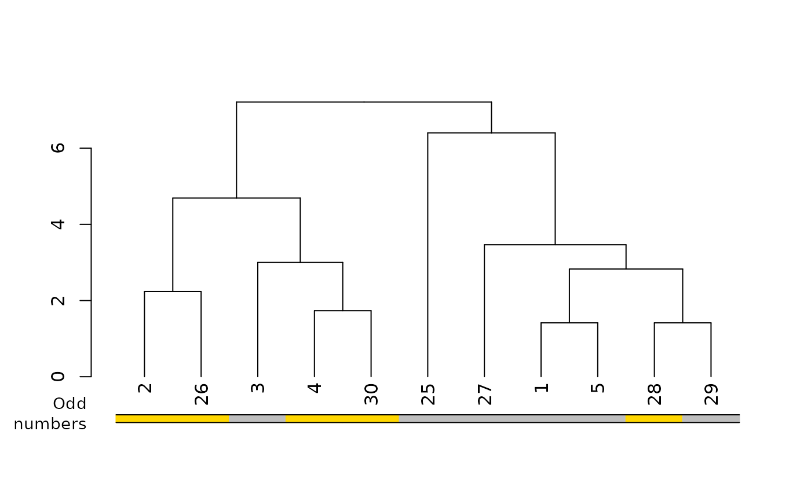
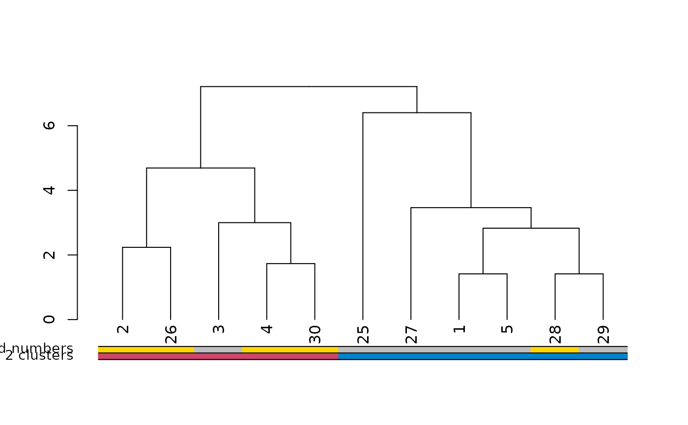
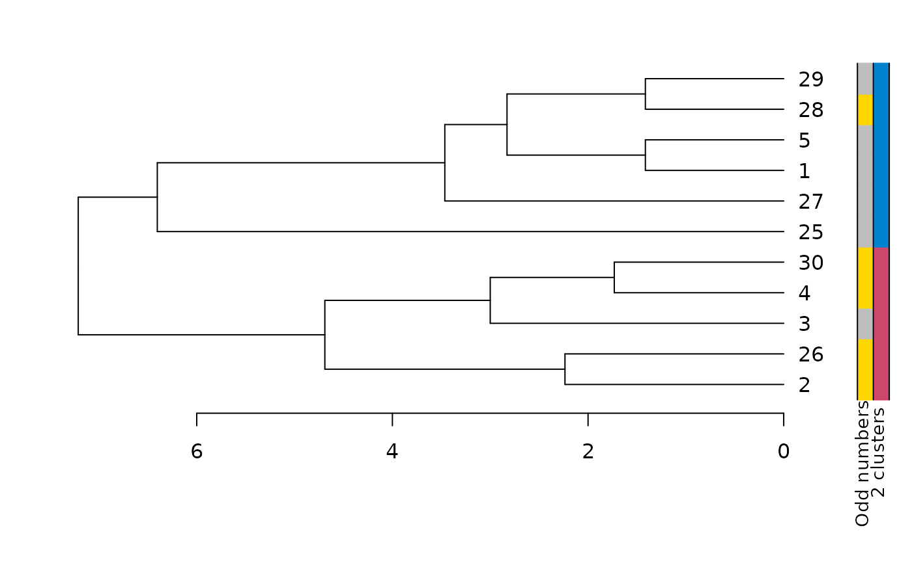
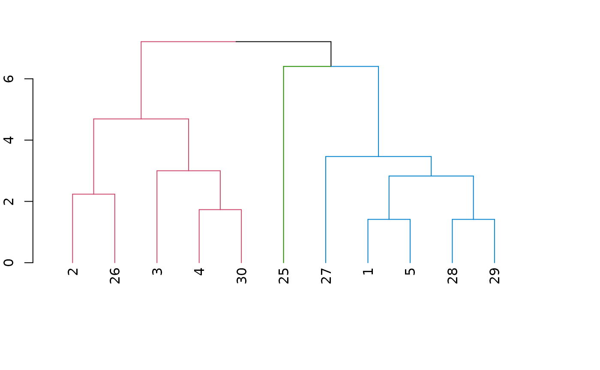
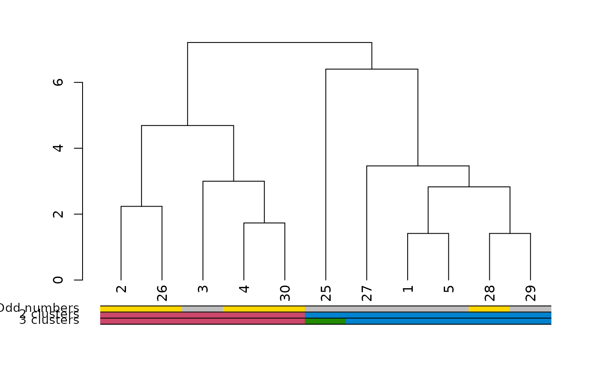
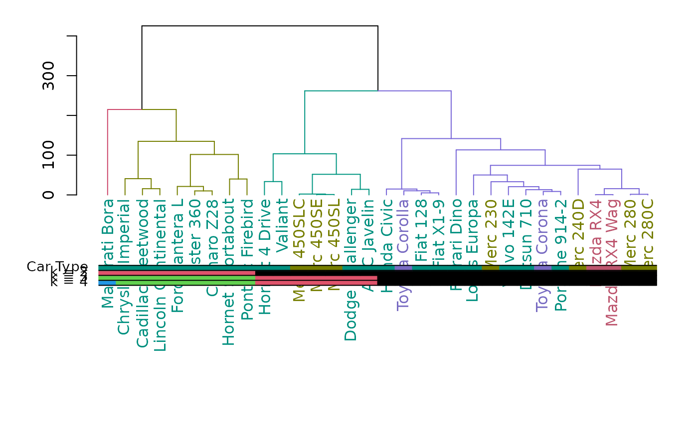
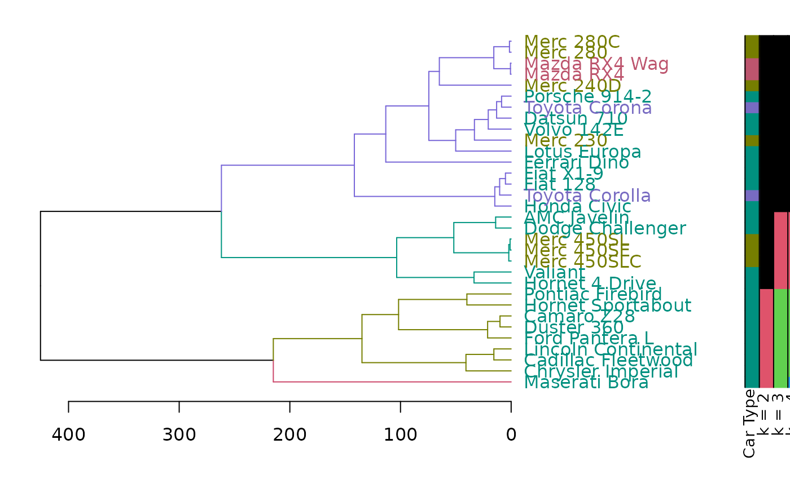

Add colored bars to a dendrogram, usually corresponding to either clusters or some outside categorization.
colored_bars(
colors,
dend,
rowLabels = NULL,
cex.rowLabels = 0.9,
add = TRUE,
y_scale,
y_shift,
text_shift = 1,
sort_by_labels_order = TRUE,
horiz = FALSE,
...
)This function is based on the plotHclustColors from the moduleColor R package. It was modified so that it would work with dendrograms (and not just hclust objects), as well allow to add the colored bars on top of an existing plot (and not only as a seperate plot).
See: https://cran.r-project.org/package=moduleColor For more details.
Coloring of objects on the dendrogram. Either a vector (one color per object) or a matrix (can also be an array or a data frame) with each column giving one group with color per object. Each column will be plotted as a horizontal row of colors (when horiz = FALSE) under the dendrogram. As long as the sort_by_labels_order paramter is TRUE (default), the colors vector/matrix should be provided in the order of the original data order (and it will be re-ordered automaticall to the order of the dendrogram)
a dendrogram object. If missing, the colors are plotted without and re-ordering (this assumes that the colors are already ordered based on the dend's labels) This is also important in order to get the correct height/location of the colored bars (i.e.: adjusting the y_scale and y_shift)
Labels for the colorings given in colors. The labels will be printed to the
left of the color rows in the plot. If the argument is given, it must be a vector of length
equal to the number of columns in colors. If not given, names(colors)
will be used if available. If not, sequential numbers
starting from 1 will be used.
Font size scale factor for the row labels. See par.
logical(TRUE), should the colored bars be added to an existing dendrogram plot?
how much should the bars be stretched on the y axis? If no dend is supplied - the default will be 1
where should the bars be plotted underneath the x axis? By default it will try to locate the bars underneath the labels (it may miss, in which case you would need to enter a number manually) If no dend is supplied - the default will be 0
a dendrogram object
logical(TRUE) - if TRUE (default), then the order of the colored bars will be sorted based on the order needed to change the original order of the observations to the current order of the labels in the dendrogram. If FALSE the colored bars are plotted as-is, based on the order of the colors vector.
logical (FALSE by default). Set to TRUE when using plot(dend, horiz = TRUE)
ignored at this point.
An invisible vector/matrix with the ordered colors.
You will often needs to adjust the y_scale, y_shift and the text_shift parameters, in order to get the bars in the location you would want.
(this can probably be done automatically, but will require more work. since it has to do with the current mar settings, the number of groups, and each computer's specific graphic device. patches for smarter defaults will be appreciated)
rows_picking <- c(1:5, 25:30)
dend <- (iris[rows_picking, -5] * 10) %>%
dist() %>%
hclust() %>%
as.dendrogram()
odd_numbers <- rows_picking %% 2
cols <- c("gold", "grey")[odd_numbers + 1]
# scale is off
plot(dend)
colored_bars(cols, dend)

# move and scale a bit
plot(dend)
colored_bars(cols, dend,
y_shift = -1,
rowLabels = "Odd\n numbers"
)

# Now let's cut the tree and add that info to the plot:
k2 <- cutree(dend, k = 2)
cols2 <- c("#0082CE", "#CC476B")[k2]
plot(dend)
colored_bars(cbind(cols2, cols), dend,
rowLabels = c("2 clusters", "Odd numbers")
)

# The same, but with an horizontal plot!
par(mar = c(6, 2, 2, 4))
plot(dend, horiz = TRUE)
colored_bars(cbind(cols2, cols), dend,
rowLabels = c("2 clusters", "Odd numbers"),
horiz = TRUE
)

# let's add clusters color
# notice how we need to play with the colors a bit
# this is because color_branches places colors from
# left to right. Which means we need to give colored_bars
# the colors of the items so that ofter sorting they would be
# from left to right. Here is how it can be done:
the_k <- 3
library(colorspace)
cols3 <- rainbow_hcl(the_k, c = 90, l = 50)
dend %>%
set("branches_k_color", k = the_k, with = cols3) %>%
plot()

kx <- cutree(dend, k = the_k)
ord <- order.dendrogram(dend)
kx <- sort_levels_values(kx[ord])
kx <- kx[match(seq_along(ord), ord)]
par(mar = c(5, 5, 2, 2))
plot(dend)
colored_bars(cbind(cols3[kx], cols2, cols), dend,
rowLabels = c("3 clusters", "2 clusters", "Odd numbers")
)

## mtcars example
# Create the dend:
dend <- as.dendrogram(hclust(dist(mtcars)))
# Create a vector giving a color for each car to which company it belongs to
car_type <- rep("Other", length(rownames(mtcars)))
is_x <- grepl("Merc", rownames(mtcars))
car_type[is_x] <- "Mercedes"
is_x <- grepl("Mazda", rownames(mtcars))
car_type[is_x] <- "Mazda"
is_x <- grepl("Toyota", rownames(mtcars))
car_type[is_x] <- "Toyota"
car_type <- factor(car_type)
n_car_types <- length(unique(car_type))
col_car_type <- colorspace::rainbow_hcl(n_car_types, c = 70, l = 50)[car_type]
# extra: showing the various clusters cuts
k234 <- cutree(dend, k = 2:4)
# color labels by car company:
labels_colors(dend) <- col_car_type[order.dendrogram(dend)]
# color branches based on cutting the tree into 4 clusters:
dend <- color_branches(dend, k = 4)
### plots
par(mar = c(12, 4, 1, 1))
plot(dend)
colored_bars(cbind(k234[, 3:1], col_car_type), dend,
rowLabels = c(paste0("k = ", 4:2), "Car Type")
)

# horiz version:
par(mar = c(4, 1, 1, 12))
plot(dend, horiz = TRUE)
colored_bars(cbind(k234[, 3:1], col_car_type), dend,
rowLabels = c(paste0("k = ", 4:2), "Car Type"), horiz = TRUE
)
